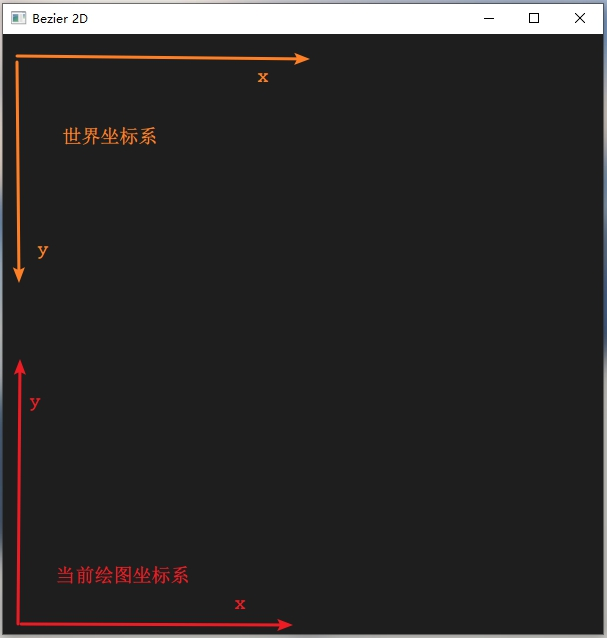
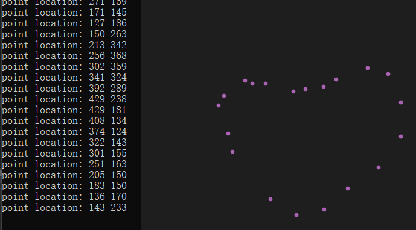
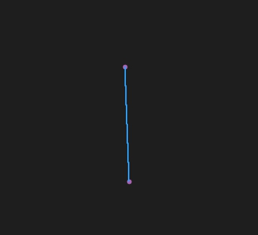
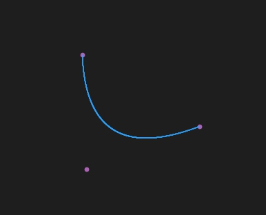
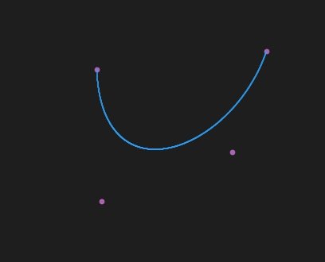
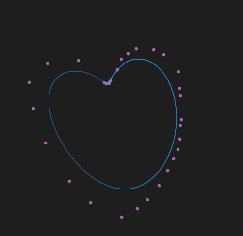

虽然说是任意阶数，但是嘞，算法原理是可以到任意阶数，计算机大概到100多阶就会溢出了
【本文代码】
在windows的OpenGL环境中，使用鼠标在屏幕上选点，并以点为基础画出Bezier曲线
创建窗口，初始化大小、显示模式、添加显示和鼠标等回调函数，设置背景颜色等。
完成之后，定义两个全局的int类型的vector 用于存储鼠标在窗口中选择的点。同时定义窗口的高度和宽度。
vector<int> x_loc = {};
vector<int> y_loc = {};
int height = 600;
int width = 600;void drawPixel(double x, double y, int point_size)
{
glViewport(0, 0, (GLsizei)width, (GLsizei)height);
glEnable(GL_POINT_SMOOTH);
glEnable(GL_BLEND);
glBlendFunc(GL_SRC_ALPHA, GL_ONE_MINUS_SRC_ALPHA);
glPointSize(point_size);
glBegin(GL_POINTS);
glVertex2d(x, y);
glEnd();
}其中point_size为点的大小。
OpenGL中存在鼠标点击、拖动等操作的回调函数，使用十分方便，调用即可。
我们定义在鼠标左键按下抬起后为一次屏幕选点，并将所选的点的坐标压入存储存储点的坐标的容器中。
void Mouse_hit(int button, int state, int x, int y)
{
/// state == 1 mean button up
/// state == 0 mean button down
/// button == 0 mean left button
/// button == 1 mean middle button
/// button == 2 mean right button
/// [x, y] is the location of mouse pointer
if (button == 0 && state == 1)
{
x_loc.push_back(x);
y_loc.push_back(y);
cout << "point location: " << x_loc[x_loc.size() - 1] << " " << y_loc[y_loc.size() - 1] << endl;
}
if (button == 2 && state == 1){
x_loc.clear();
y_loc.clear();
glClear(GL_COLOR_BUFFER_BIT | GL_DEPTH_BUFFER_BIT);
glutSwapBuffers();
glClear(GL_COLOR_BUFFER_BIT | GL_DEPTH_BUFFER_BIT);
glutSwapBuffers();
glutPostRedisplay();
cout<<" Clear Screen!"<<endl;
}
glutSwapBuffers();
glutPostRedisplay();
}回调函数使用为
glutMouseFunc(Mouse_hit);Mouse_hit函数中state代表当前鼠标的状态是按下还是抬起
button为按下的是左、中、右三键中的哪一个
[x, y]为当前鼠标指针的坐标。次坐标不是世界坐标系，使用时得进行转换，看后面
拿一张图简单说明一下。由于鼠标获取的是世界坐标系下的位置，而在屏幕上绘制点与线是使用的是当前绘图坐标系，所以要进行简单的坐标变换。

可在显示回调函数中使用如下代码重设OpenGL窗口。
glViewport(0, 0, (GLsizei)width, (GLsizei)height);
glMatrixMode(GL_PROJECTION);
glLoadIdentity();
gluOrtho2D(0, width, height, 0);好了，设置一下前景色和点的大小形状等，来看看画点的效果。

对于3阶以内的Bezier曲线，直接将Bezier曲线的定义公式展开，求解系数即可。
void drawBezier_1(vector<int> x, vector<int> y, int num_of_points)
{
float ax, bx;
float ay, by;
int temp_loc = x.size() - 2;
glColor3f(0.0f, 0.0f, 1.0f);
drawPixel(x[temp_loc + 0], y[temp_loc + 0], 7);
drawPixel(x[temp_loc + 1], y[temp_loc + 1], 7);
ax = x[temp_loc + 0];
ay = y[temp_loc + 0];
bx = x[temp_loc + 1];
by = y[temp_loc + 1];
float t;
t = 0.0;
float dt = 0.002;
while (t <= 1)
{
float x_temp = (1 - t) * ax + t * bx;
float y_temp = (1 - t) * ay + t * by;
drawPixel(x_temp, y_temp, 1);
t += dt;
}
}
void drawBezier_2(vector<int> x, vector<int> y, int num_of_points)
{
float ax, bx;
float ay, by;
float tSquared;
int temp_loc = x.size() - 3;
ax = x[temp_loc + 0] - 2 * x[temp_loc + 1] + x[temp_loc + 2];
ay = y[temp_loc + 0] - 2 * y[temp_loc + 1] + y[temp_loc + 2];
bx = x[temp_loc + 0] * (-2) + x[temp_loc + 1] * 2;
by = y[temp_loc + 0] * (-2) + y[temp_loc + 1] * 2;
glColor3f(0.0f, 0.0f, 1.0f);
drawPixel(x[temp_loc + 0], y[temp_loc + 0], 7);
drawPixel(x[temp_loc + 1], y[temp_loc + 1], 7);
drawPixel(x[temp_loc + 2], y[temp_loc + 2], 7);
float t;
t = 0.0;
float dt = 0.002;
while (t <= 1)
{
tSquared = t * t;
float x_temp = ax * tSquared + bx * t + x[temp_loc + 0];
float y_temp = ay * tSquared + by * t + y[temp_loc + 0];
drawPixel(x_temp, y_temp, 1);
t += dt;
}
}
void drawBezier_3(vector<int> x, vector<int> y, int num_of_points)
{
float ax, bx, cx;
float ay, by, cy;
float tSquared, tCubed;
int temp_loc = x.size() - 4;
cx = 3.0 * (x[temp_loc + 1] - x[temp_loc + 0]);
bx = 3.0 * (x[temp_loc + 2] - x[temp_loc + 1]) - cx;
ax = x[temp_loc + 3] - x[temp_loc + 0] - cx - bx;
cy = 3.0 * (y[temp_loc + 1] - y[temp_loc + 0]);
by = 3.0 * (y[temp_loc + 2] - y[temp_loc + 1]) - cy;
ay = y[temp_loc + 3] - y[temp_loc + 0] - cy - by;
glColor3f(0.0f, 0.0f, 1.0f);
drawPixel(x[temp_loc + 0], y[temp_loc + 0], 7);
drawPixel(x[temp_loc + 1], y[temp_loc + 1], 7);
drawPixel(x[temp_loc + 2], y[temp_loc + 2], 7);
drawPixel(x[temp_loc + 3], y[temp_loc + 3], 7);
float t;
t = 0.0;
float dt = 0.002;
while (t <= 1)
{
tSquared = t * t;
tCubed = tSquared * t;
float x_temp = (ax * tCubed) + (bx * tSquared) + (cx * t) + x[temp_loc + 0];
float y_temp = (ay * tCubed) + (by * tSquared) + (cy * t) + y[temp_loc + 0];
drawPixel(x_temp, y_temp, 1);
t += dt;
}
}
阶数+1个点画一次曲线。由Bezier的定义公式我们可以发现，画Bezier曲线需要求组合数 ，求组合数需要求阶乘，然后还需要求幂。因为c++中有求幂的函数,所以实现阶乘和组合数即可。
阶乘
double fac(int n)
{
double result = 1;
if (n == 0)
return result;
for (int i = 1; i <= n; i++){
result *= i;
}
return result;
}为了扩大计算范围，使用了double类型
组合数
double combinate(int n, int k)
{
if (k == 0)
return 1;
double result = 0;
result = fac(n) / (fac(k)*(fac(n - k)));
return result;
}为了扩大计算范围，也使用了double类型，其中k <= n
n阶Bezier曲线
void drawBezier(vector<int> x, vector<int> y, int num_of_points) {
float px = 0.0, py = 0.0; //point current should draw
int n; //number of points -1
float t = 0.0, dt = 0.0005; //t in [0, 1], dt is changes each time in t
n = x.size() - 1;
while (t <= 1) {
for (int i = 0; i <= n; i++) {
double temp = combinate(n, i)*powf(t, i)*powf(1 - t, n - i);
px += temp * x[i];
py += temp * y[i];
}
drawPixel(px, py, 1);
t += dt;
px = 0.0;
py = 0.0;
}
}1阶

2阶

3阶

n阶曲线画的❤

简单而粗暴。。。